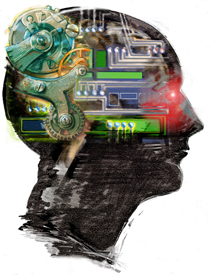

| |
The branch of computer science concerned with making computers behave like humans. The term was coined in 1956 by John McCarthy at the Massachusetts Institute of Technology. Artificial intelligence includes
· games playing: programming computers to play games such as chess and checkers
· expert systems : programming computers to make decisions in real-life situations (for example, some expert systems help doctors diagnose diseases based on symptoms)
· natural language : programming computers to understand natural human languages
· neural networks : Systems that simulate intelligence by attempting to reproduce the types of physical connections that occur in animal brains
· robotics : programming computers to see and hear and react to other sensory stimuli
Currently, no computers exhibit full artificial intelligence (that is, are able to simulate human behavior). The greatest advances have occurred in the field of games playing. The best computer chess programs are now capable of beating humans.
In May, 1997, an IBM super-computer called Deep Blue defeated world chess champion Gary Kasparov in a chess match. In the area of robotics, computers are now widely used in assembly plants, but they are capable only of very limited tasks. Robots have great difficulty identifying objects based on appearance or feel, and they still move and handle objects clumsily.
Natural-language processing offers the greatest potential rewards because it would allow people to interact with computers without needing any specialized knowledge. You could simply walk up to a computer and talk to it. Unfortunately, programming computers to understand natural languages has proved to be more difficult than originally thought. Some rudimentary translation systems that translate from one human language to another are in existence, but they are not nearly as good as human translators. There are also voice recognition systems that can convert spoken sounds into written words, but they do not understand what they are writing; they simply take dictation. Even these systems are quite limited -- you must speak slowly and distinctly.
In the early 1980s, expert systems were believed to represent the future of artificial intelligence and of computers in general. To date, however, they have not lived up to expectations. Many expert systems help human experts in such fields as medicine and engineering, but they are very expensive to produce and are helpful only in special situations. Today, the hottest area of artificial intelligence is neural networks, which are proving successful in a number of disciplines such as voice recognition and natural-language processing. There are several programming languages that are known as AI languages because they are used almost exclusively for AI applications. The two most common are LISP and Prolog. |
|